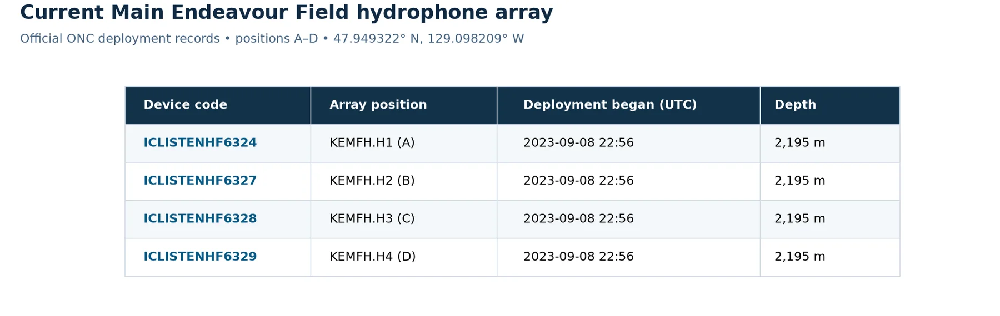
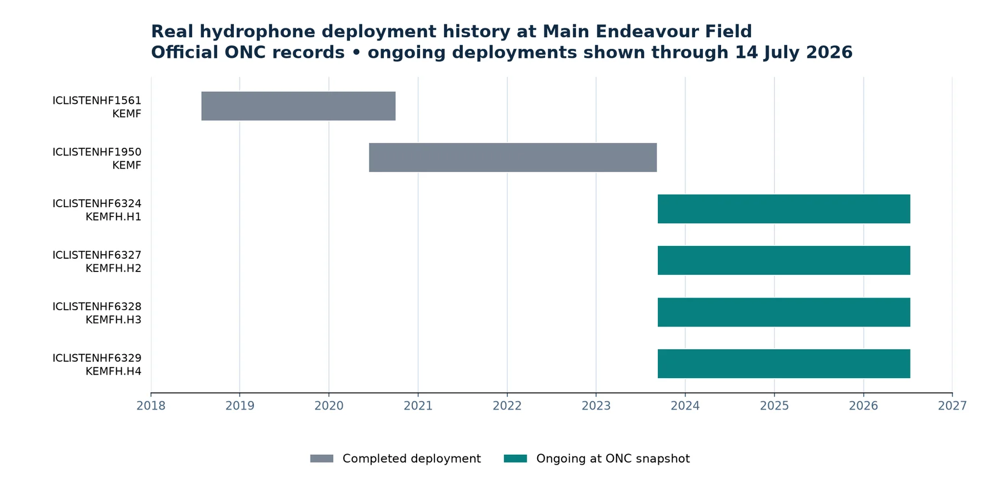
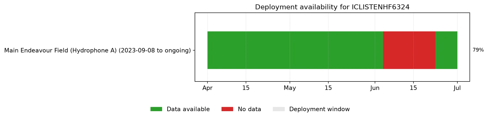
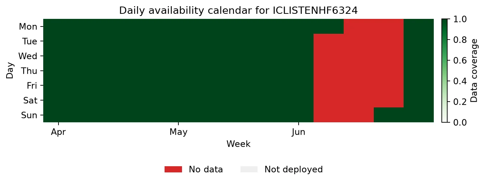

2. Find a Hydrophone and Valid Dates¶
A device code identifies an instrument, while a deployment tells you where and when that instrument was installed. Always confirm both before downloading: a valid device code can still return no files for dates outside a deployment or during an archive gap.
List current and historical deployments¶
from onc_hydrophone_data.data.deployment_checker import (
HydrophoneDeploymentChecker,
)
from onc_hydrophone_data.onc.common import load_config
onc_token, _ = load_config()
checker = HydrophoneDeploymentChecker(onc_token)
inventory = checker.collect_hydrophone_inventory()
# Instruments that appear to be deployed now.
checker.show_hydrophone_inventory_table(inventory, view="current")
# Historical deployments, including completed ones.
checker.show_hydrophone_inventory_table(
inventory,
view="history",
max_rows=20,
)
For example, these are real records for the four-device hydrophone array at Main Endeavour Field:

Source: ONC Hydrophone Location Codes & Data Types, accessed 2026-07-14. An empty ONC end date means the deployment was ongoing in that source snapshot.
Focus on these columns:
| Column | Why it matters |
|---|---|
device_code |
The value passed to download methods |
location_name |
Where the hydrophone was deployed |
begin_date / end_date |
The time interval you can sensibly query |
position_name |
The element within a multi-hydrophone array, when present |
Once you find a candidate, show only that instrument's deployment history:
checker.show_device_deployments(
device_codes=["ICLISTENHF6324"],
inventory=inventory,
)
These real ONC records show older single-hydrophone deployments followed by the
four-position Main Endeavour Field array that includes ICLISTENHF6324.

The official ONC inventory listed no end date for the four array deployments when accessed on 2026-07-14, meaning they were ongoing in that source snapshot.
Confirm archive availability¶
A deployment window means the instrument was installed; it does not guarantee that every hour has an archived audio file. Query a modest date range and plot daily coverage:
availability = checker.get_device_availability(
"ICLISTENHF6324",
start_date="2024-04-01",
end_date="2024-07-01",
timezone_str="UTC",
bin_size="day",
)
Note
Availability queries inspect ONC archive listings. Start with weeks or a few months rather than the instrument's entire history.
Timeline view¶
from onc_hydrophone_data.utils import plot_deployment_availability_timeline
timeline_fig, _ = plot_deployment_availability_timeline(
availability,
show=False,
)
timeline_fig.savefig(
"availability_timeline.png",
dpi=170,
bbox_inches="tight",
)

The availability result distinguishes archived data, gaps during a deployment, and dates when the device was not deployed. Coverage is the duration for which merged archived audio intervals overlap each daily bin, divided by the bin's total duration.
Calendar view¶
from onc_hydrophone_data.utils import plot_availability_calendar
calendar_fig, _ = plot_availability_calendar(
availability,
show=False,
)
calendar_fig.savefig(
"availability_calendar.png",
dpi=170,
bbox_inches="tight",
)

Each calendar value is the fraction of that day covered by archived audio time intervals. A zero value within a deployment is an archive gap; dates outside a deployment are recorded separately rather than treated as missing data.
Real archive result
Both plots above were generated on 2026-07-14 by running the documented
query for ICLISTENHF6324 from 2024-04-01 through 2024-07-01. ONC returned
91 daily bins: 72 with archived data and 19 without data, covering
2024-06-04 through 2024-06-22. Historical results can change if ONC
reprocesses its archive, so rerun the commands when current status matters.
Carry your choice into the download¶
Write down:
- the
device_code; - a UTC start time inside a green interval;
- a UTC end time a few minutes later for your first test.
Continue to 3. Download Audio and Make a Spectrogram with those values.